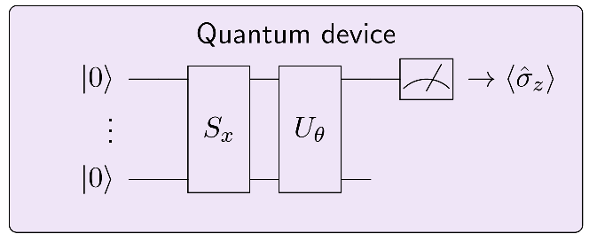
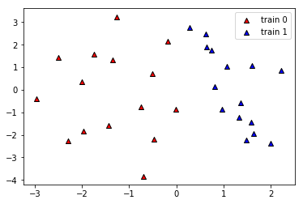
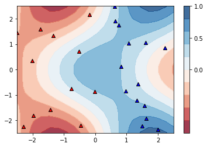
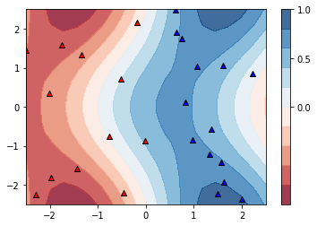

25. Creating a variational classifier with PennyLane#
We saw in Section ? that feature embeddings can be used in combination with variational classifiers that analyse data in “quantum feature space”. This notebook shows a simplified implementation of the idea in the PennyLane framework for hybrid optimization.
Since training variational quantum circuits can be time consuming, we show what decision boundaries for a simple classification task a quantum classifier gives rise to.
25.1. The variational circuit#
The circuit we discussed contains the following elements:
a quantum circuit \(S_x\) that depends on an input \(x\), which maps the input to a quantum state,
a variational circuit \(U_{\theta}\), which depends on parameters \(\theta\) that can be optimized,
a computational basis measurement of the first qubit.
The routine can be interpreted as a classifier that takes inputs \(x\) and maps them to outputs \(y = \langle \hat{\sigma}_z\rangle\). The classifier is “trained” by finding parameters \(\theta\) given data of input-output samples.

For this tutorial to run, you need to install the PennyLane library. In most cases this can be done with
pip install pennylane
An extended example and more details can be found at pennylane.ai.
25.2. Importing libraries#
Let us import some helpers from scikit-learn:
from sklearn.datasets import make_classification
from sklearn.preprocessing import scale
from sklearn.model_selection import train_test_split
from sklearn.metrics import accuracy_score
If you installed the PennyLane library correctly, you can run the following imports.
import pennylane as qml
from pennylane import numpy as np
from pennylane.optimize import GradientDescentOptimizer
We also need matplotlib for visualisation.
import matplotlib.pyplot as plt
%matplotlib inline
25.3. Implementing the circuit#
As a quantum device we use PennyLane’s default qubit simulator with 2 qubits. We can create the quantum device as follows.
Note 1: using another backend than default.qubit, we can also run the circuit on a real quantum device through a cloud service.
Note 2: the keyword wires stands for the number of qubits. Since PennyLane can also handle non-qubit (i.e., continuous-variable systems), wires generally refers to the number of subsystems.
dev = qml.device('default.qubit', wires=2)
We now implement the two quantum circuits in PennyLane, using rather arbitrary gate sequences (find better ones!). Let is first define a feature embedding (or state preparation) circuit \(S_x\)…
def S(x):
qml.RX(x[0], 0)
qml.RX(x[1], 1)
… and a classification circuit \(U(\theta)\).
def U(theta):
qml.Rot(theta[0], theta[1], theta[2], 0)
qml.Rot(theta[3], theta[4], theta[5], 0)
qml.CNOT([1, 0])
We call these two routines in a quantum classifier function. In fact, \(U(\theta)\) is called several times, depending on how many lists of parameters thetas contains. After this, the expectation of the Pauli Z operator is measured with respect to the final state.
The line “@qml.qnode(dev)” is a decorator that turns the function into a QNode object, PennyLane’s representation of quantum computations. Note that in qclassifier no classical processing (e.g., addition, multiplication, etc) is allowed, but only quantum information processing (gates and expectation values). You can find more information on https://pennylane.readthedocs.io/en/latest/code/qnode.html .
num_layers = 3
@qml.qnode(dev)
def qclassifier(thetas, x=None):
S(x)
for theta in thetas:
U(theta)
return qml.expval.PauliZ(0)
For optimization we need a cost function. The cost compares targets Y and model outputs with a square loss function. PennyLane needs to be able to “pass gradients” through these functions, which is ensured by previously importing PennyLane’s native numpy library version as np. (This import makes most numpy operations accessible to automatic differentiation; in other words, PennyLane can compute gradients of functions constructed from QNodes and numpy operations).
def cost(theta, X, Y):
Y_ = np.array([qclassifier(theta, x=x) for x in X])
loss = np.mean(np.abs(Y - Y_)**2)
return loss
25.4. Loading data#
We generate a simple dataset of two features. To simplify things we will not split it into training and validation sets but just try to fit the data.
X, y = make_classification(n_samples=30, n_features=2, n_informative=2, n_redundant=0,
n_repeated=0, n_classes=2, random_state=6, class_sep=1.4)
We can visualise the data with matplotlib.
plt.figure()
plt.scatter(X[:, 0][y==0], X[:, 1][y==0], c='r', marker='^', edgecolors='k', label="train 0")
plt.scatter(X[:, 0][y==1], X[:, 1][y==1], c='b', marker='^', edgecolors='k', label="train 1")
plt.legend()
plt.show()

25.5. Visualising the decision boundary#
Let’s have a look at the decision boundaries that the quantum classifier “naturally” gives rise to if it is not trained.
You can change the parameter num_layers above and run its cell again to play around with the shape of the decision boundary. (The parameter is defined in the same cell as the qclassifier in order to make sure you redefine the classifier as well once num_layers changes.)
PS: The plot takes some seconds to be built.
np.random.seed(10)
thetas = 3*np.random.rand(num_layers, 6)
# make data grid for contour plot
xx, yy = np.meshgrid(np.linspace(-2.5, 2.5, 20), np.linspace(-2.5, 2.5, 20))
X_grid = [np.array([x, y]) for x, y in zip(xx.flatten(), yy.flatten())]
# plot decision regions
plt.figure()
cm = plt.cm.RdBu
predictions_grid = [qclassifier(thetas, x=x) for x in X_grid]
Z = np.reshape(predictions_grid, xx.shape)
cnt = plt.contourf(xx, yy, Z, levels=np.arange(-1, 1.1, 0.2), cmap=cm, alpha=.8)
plt.colorbar(cnt, ticks=[0, 0.5, 1])
# plot data
plt.scatter(X[:, 0][y==0], X[:, 1][y==0], c='r', marker='^', edgecolors='k', label="train 0")
plt.scatter(X[:, 0][y==1], X[:, 1][y==1], c='b', marker='^', edgecolors='k', label="train 1")
plt.ylim(-2.5, 2.5)
plt.xlim(-2.5, 2.5)
plt.show()

25.6. More Training#
The model can be trained by updating the parameters with stochastic gradient descent. In each step, a fair bit of quantum computation is simulated in the background to get gradients for each data point, and training takes some time.
o = GradientDescentOptimizer(0.01)
for it in range(40):
thetas = o.step(lambda v: cost(v, X, y), thetas)
print("Cost in step" , it+1 , ":", cost(thetas, X, y))
Cost in step 1 : 0.34446044359858236
Cost in step 2 : 0.33999997005941457
Cost in step 3 : 0.33581915712613963
Cost in step 4 : 0.33189645895663944
Cost in step 5 : 0.3282121232717326
Cost in step 6 : 0.32474804269681345
Cost in step 7 : 0.32148761639468854
Cost in step 8 : 0.31841562188225087
Cost in step 9 : 0.315518096738261
Cost in step 10 : 0.3127822297831682
Cost in step 11 : 0.31019626123081806
Cost in step 12 : 0.3077493912650728
Cost in step 13 : 0.3054316964730793
Cost in step 14 : 0.3032340535643096
Cost in step 15 : 0.30114806981522346
Cost in step 16 : 0.29916601969935314
Cost in step 17 : 0.29728078718865664
Cost in step 18 : 0.29548581324173284
Cost in step 19 : 0.29377504802618853
Cost in step 20 : 0.29214290745482835
Cost in step 21 : 0.2905842336473982
Cost in step 22 : 0.2890942589608088
Cost in step 23 : 0.28766857326056183
Cost in step 24 : 0.28630309413429955
Cost in step 25 : 0.28499403977478893
Cost in step 26 : 0.2837379042842136
Cost in step 27 : 0.28253143517432416
Cost in step 28 : 0.28137161285789014
Cost in step 29 : 0.2802556319460126
Cost in step 30 : 0.2791808841833418
Cost in step 31 : 0.2781449428691556
Cost in step 32 : 0.277145548626726
Cost in step 33 : 0.276180596396531
Cost in step 34 : 0.27524812354076683
Cost in step 35 : 0.27434629895738144
Cost in step 36 : 0.2734734131115773
Cost in step 37 : 0.27262786890154156
Cost in step 38 : 0.27180817328308066
Cost in step 39 : 0.2710129295850302
Cost in step 40 : 0.27024083045375114
Finally, we can evaulate the accuracy on the training set, comparing model predictions with the target labels y. If the accuracy is 1.0, all data points have been classified correctly by the model. Of course, this does not tell us anything about the model’s generalisation performance.
You can run the cell above again to train for another 40 steps.
pred = [1 if qclassifier(thetas, x=x_) > 0 else 0 for x_ in X]
accuracy_score(pred, y)
0.9
Let’s plot the new decision regions.
# make data for plot
xx, yy = np.meshgrid(np.linspace(-2.5, 2.5, 20), np.linspace(-2.5, 2.5, 20))
X_grid = [np.array([x, y]) for x, y in zip(xx.flatten(), yy.flatten())]
# start plot
plt.figure()
cm = plt.cm.RdBu
# plot decision regions
predictions_grid = [qclassifier(thetas, x=x) for x in X_grid]
Z = np.reshape(predictions_grid, xx.shape)
cnt = plt.contourf(xx, yy, Z, levels=np.arange(-1, 1.1, 0.2), cmap=cm, alpha=.8)
plt.colorbar(cnt, ticks=[0, 0.5, 1])
# plot data
plt.scatter(X[:, 0][y==0], X[:, 1][y==0], c='r', marker='^', edgecolors='k', label="train 0")
plt.scatter(X[:, 0][y==1], X[:, 1][y==1], c='b', marker='^', edgecolors='k', label="train 1")
plt.ylim(-2.5, 2.5)
plt.xlim(-2.5, 2.5)
plt.show()
